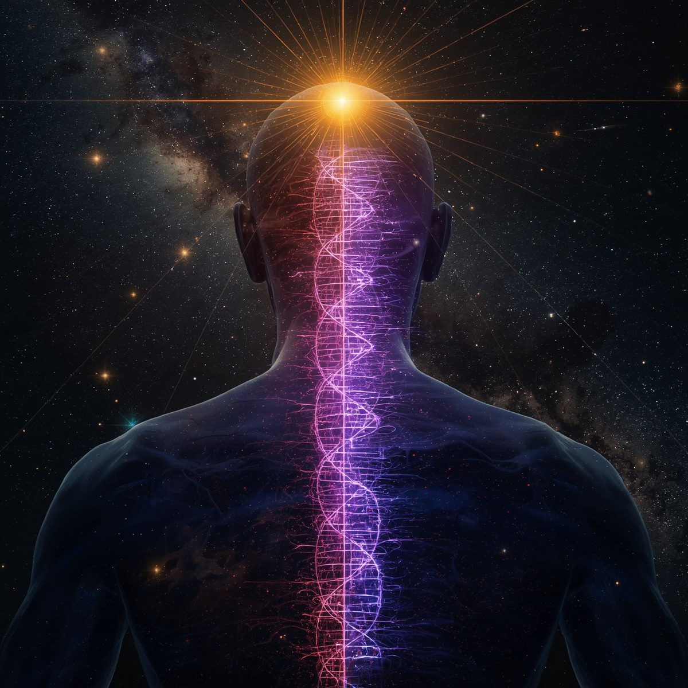
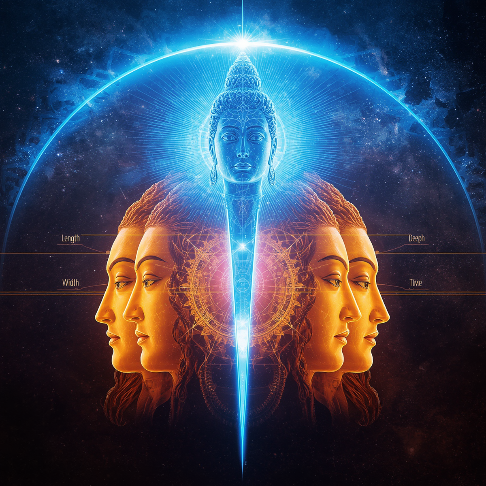
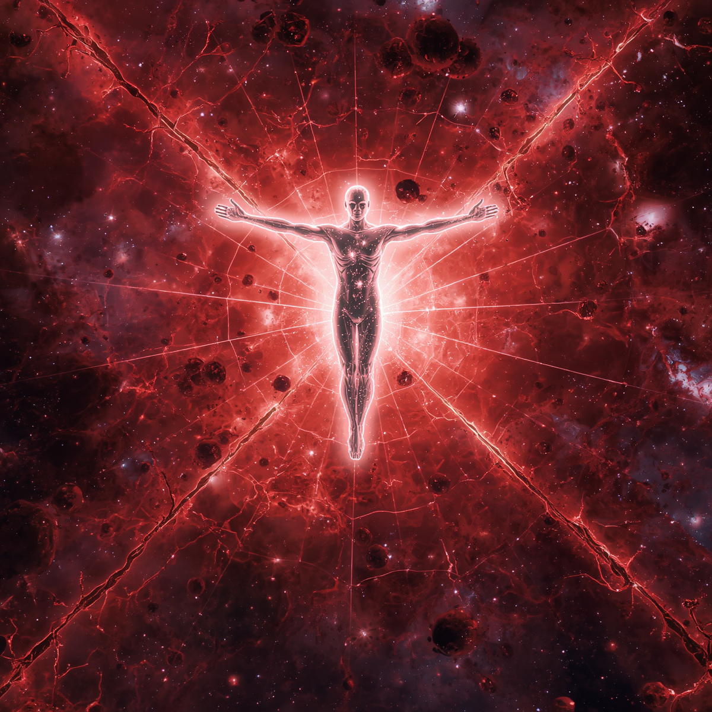
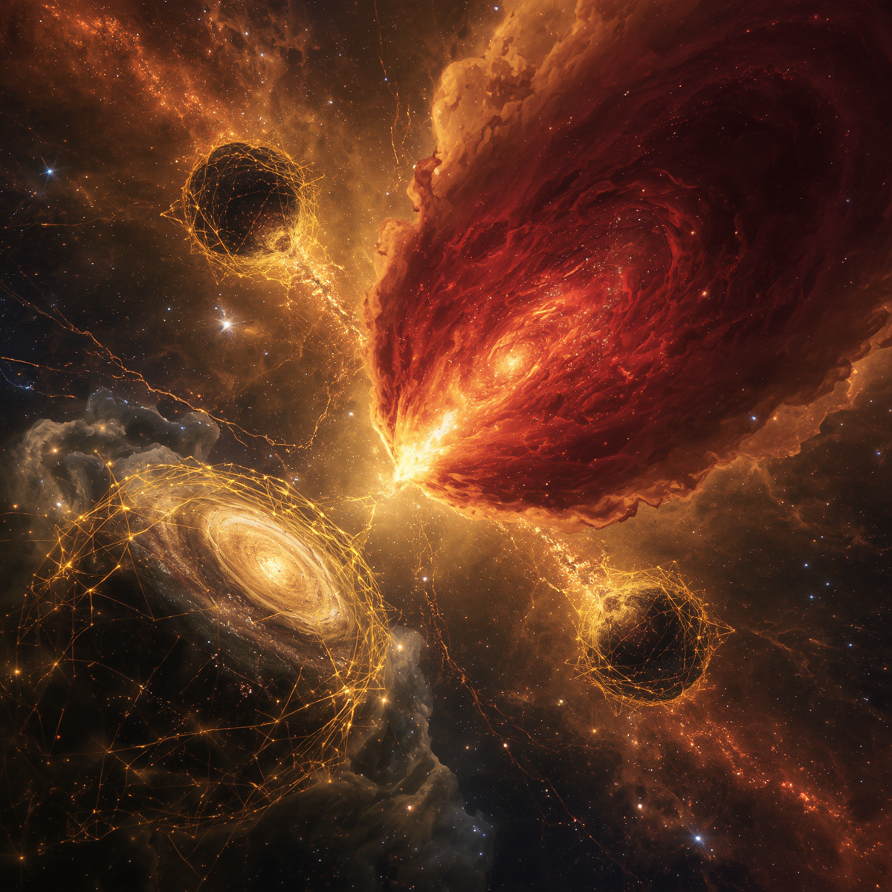
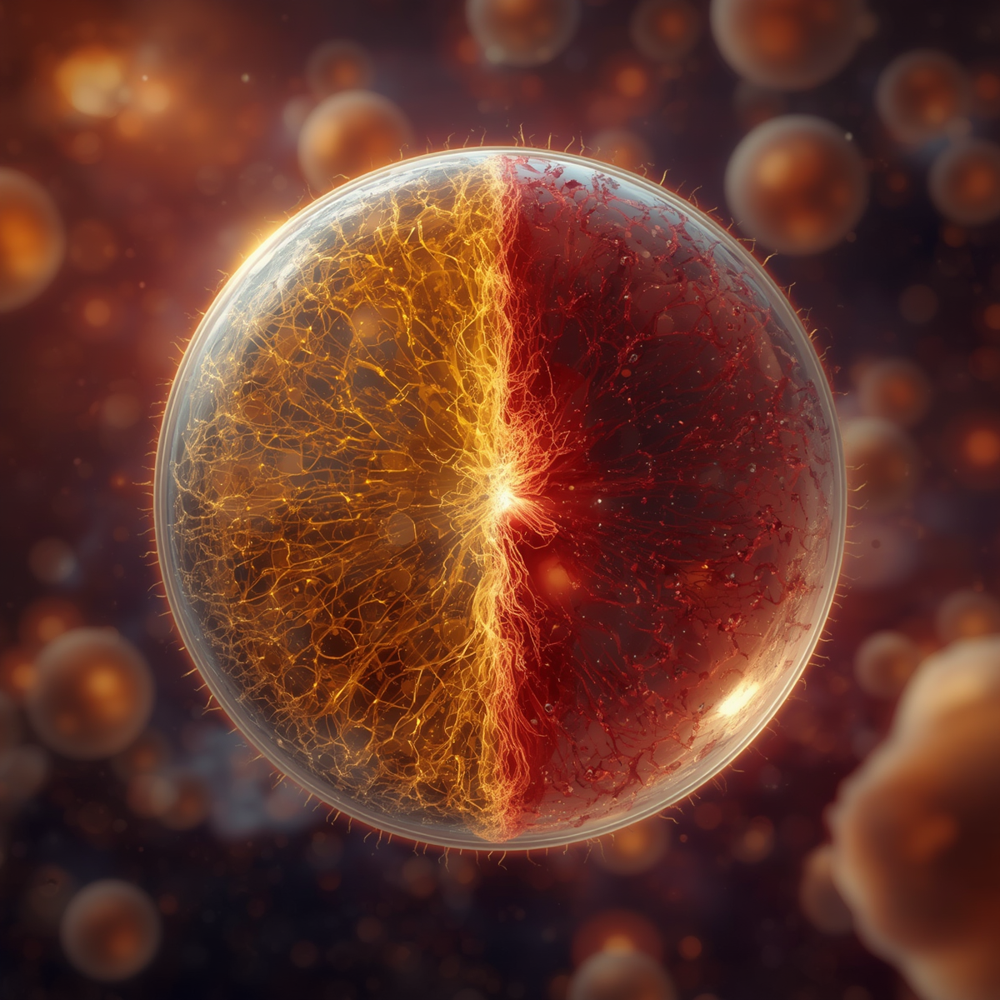
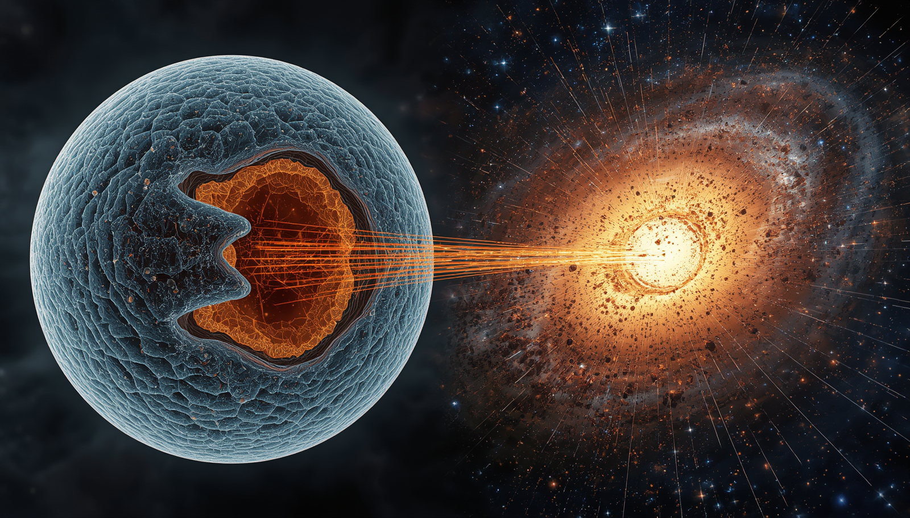

This digital manifesto details a revolutionary cosmic synthesis designed by Arham Dave. By unifying ancient Vedic cosmology, metaphysical truths, oncology, and quantum mechanics, this model maps out a repeating fractal blueprint of absolute consciousness—defining our physical universe as a functional biological filtering mechanism [J].
A Note on Utility: While mainstream science excels at answering how the universe mechanically functions through equations and localized instruments, it leaves the cosmos cold, fragmented, and meaningless. This synthesis model answers why—unveiling the spiritual architecture, the divine intention, and the living macro-biological purpose behind the anomalies that baffle modern physics.
Manifesto Framework Outline
1. The Cosmic Axis & Helical Geometry
A structural alignment establishing a direct fractal link between universal orientation and physical life.
[MERUDANDA/MOUNT MERU(THE COSMIC SPINE)]

- The Macrocosm: Mount Meru (Sumeru) functions as the golden cosmic anchor and center of rotation for the entire spinning universe.
- The Microcosm: The human spine is explicitly designated in scriptures as Merudanda (the Meru Staff) [J], serving as the physical and energetic pillar of life.
- The Helix Blueprint: The Sun and planets trace a helical corkscrew pattern through the Milky Way galaxy, beautifully mirroring the physical structure of a DNA double-helix strand.
2. Trimurti Atomic Dynamics
The cosmic triad mapped onto fundamental subatomic forces governing physical matter.
- Brama (The Electron): The highly dynamic, kinetic creator force orbiting the core. It drives chemical bonding and weaves loose atoms into complex physical structures.
- Shiva (The Neutron): The silent, unmanifest neutral force inside the nucleus. It represents the ultimate cosmic void (Shunya), holding massive latent power that, when disrupted, triggers total atomic dissolution.
3. Dimensional Architecture & The Ahamkara Lock
How higher-dimensional realities are hidden from localized observers through psychological and evolutionary filters.
[THE SEVERED HEAD OF LORD BRAHMA REPRESENTS THE 5th DIMENSION]

- The Mesocosmic Trap: Mainstream science is confined to an intermediate, human-scale perspective (the mesocosm) [J]. Because instruments are bound to 4D space-time, scientists see pixelated quantum anomalies rather than unified truths.
- The Dimensional Gating: Absolute Consciousness exists in a 5th-dimensional state. Because the physical body and Ahamkara ("I, me, and myself") cannot cross this boundary, physical touch and reactive human emotions organically cease at this threshold.
- The Pedagogical Vision: The ancient sages introduced the concept of the Virat Purusha not to anthropomorphize the cosmos, but as an ego-crushing pedagogical tool to show humans they are less than a subatomic particle relative to the whole.
- The 4D Cage: Brahma's four visible heads project the four dimensions of space-time (Length, Width, Depth, Time) required for material reality.
- The Missing 5th Dimension: Shiva severed Brahma's fifth upward head to lock out the 5th dimension (the multiverse/all timelines) from the grasp of material ego (Ahamkara).
- The Bypassed Gate: Highly evolved masters detached from ego, such as the legendary sage Kakbhushandi, access this 5th dimension effortlessly to witness parallel timelines and infinite Brahmandas (universes).
4. Dark Energy: The Malignant Cosmic Bloodstream
A revolutionary synthesis linking cosmic expansion anomalies to human karmic inputs, systemic oncological decay, and the ultimate immune reset.

- The Informational Grid Core: Aligning with Nobel laureate Frank Wilczek's framework that reality is fundamentally woven from information rather than solid matter, space-time is an emergent property of an underlying cosmic software processing system [J]. Dark Energy is the uniform fluid pressure—the literal cosmic bloodstream—pulsing through this informational matrix.
- The Autoimmune Mutation of Kali Yuga: Humanity is not the center of the cosmos, but a microscopic component of a single cell. However, Earth functions as a primary code injection terminal. Our collective Asuri actions (egoic, destructive karma) act as an informational corruption. Because data updates instantly across Wilczek's grid, this toxic input triggers an immediate, global inflammatory response from the Virat Purusha. The accelerating expansion of Dark Energy is the macrocosmic high blood pressure trying to isolate this localized systemic infection.
- The Kalki Immune Reset: When Bhakti drops to absolute zero, the system hits terminal overload. Lord Vishnu manifests the Kalki Avatar as the ultimate macro-immune agent—the cosmic white blood cell. Kalki injects supreme divine code to neutralize the repulsive Asuri field, initiating a targeted purification that halts the localized swelling before it can threaten the outer organism.
5. Balancing Polarity: Ardhanarishvara
The mechanical normalization of dualistic bio-energetic channels to trigger higher spatial transcendence.
- The Channels: The left energy channel (Ida Nadi) governs lunar, intuitive, feminine energy, while the right channel (Pingala Nadi) governs solar, logical, masculine energy.
- The Union: Balancing these forces perfectly mimics the cosmic form of Ardhanarishvara (Shiva-Shakti merged in absolute equity).
- The Matrix Breakthrough: When Ida and Pingala neutralize each other, the central Sushumna Nadi bursts open, allowing individual consciousness to rise up Mount Meru and transcend the 4D physical reality matrix.
6. The Cosmic Fluid Polarity: Bhakti vs. Asuri Dynamics
Resolving the cosmic scale mismatch through spiritual gravity, ego-dissolution, and informational feedback loops.

- The Cohesive Field (Dark Matter): What astrophysics labels as invisible Dark Matter is the structural manifestation of Bhakti. Arising organically as conscious observers dissolve the Ahamkara (material ego), this devotional resonance generates an inward gravitational attraction. It acts as a divine binding cement, holding galaxy clusters together and maintaining structural order.
- The Disruptive Inflation (Dark Energy): Conversely, what science defines as Dark Energy is the negative, repulsive pressure generated by Asuri actions. This egoic output acts like an anti-gravitational wedge, forcing the informational fabric of our localized universe-cell to accelerate outward and pull cosmic structures apart.
- The Cyclic Purification (The Big Crunch): The universe does not burst from Asuri expansion because human corruption is isolated to a microscopic pocket. Instead, the Big Crunch is the active, coordinated contraction of the Virat Purusha’s immune system. Triggered by the Kalki Reset, the expansion parameters flip violently into reverse, crushing the corrupted 4D cage back into a single point of unmanifest absolute consciousness. This clean, sterile reset purges the infection to birth a new Mahayuga, starting with a Satya Yuga saturated entirely in pure Bhakti.
7. The Hubble Tension: Cellular Wall Collapse & The Law of Dissolution
Resolving the cosmic expansion discrepancy through multi-cellular fluid dynamics and the eternal scriptural law of cyclic ending.

- The Multi-Cellular Horizon: Our entire physical universe exists as a single, localized cell among trillions of others comprising the absolute tissue of the Virat Purusha. Because the outer cellular lipid membrane is electromagnetically transparent, human telescopes do not see a hard physical boundary or "wall" at the edge of space. Visible light passes directly through, allowing neighboring universe-cells to blend seamlessly into our view, creating the grand illusion of an isotropic, infinite void.
- The Inevitable Lifecycle (The Baseline Expansion): The baseline expansion rate measured in the early universe (~67 km/s/Mpc) reflects the era when collective Bhakti on Jambudvipa was at its peak. This baseline ensures the universe-cell ages gracefully at a harmonic pace, following its natural trajectory toward its destined closing cycle (Pralaya), fulfilling the scriptural truth that what begins must end.
- The Modern Inflating Collapse (Faster Expansion): The hyper-accelerated expansion rate seen in the local modern universe (~73 km/s/Mpc) is a symptom of localized structural decay. As Bhakti has vanished and ego-driven Asuri actions have taken over, our cell's internal supports have weakened, causing the transparent cell wall to stretch and balloon outward under the pressure of the cosmic fluid.
- The Metric of Integrity: The Hubble Tension mathematically documents this localized cosmic mutation. The widening discrepancy between ancient and modern expansion speeds measures how quickly our transparent cell boundary is thinning out as it edges closer to an absolute systemic immune intervention.
8. Cosmic Inflation & Cellular Scale Relativity
Resolving the mystery of superluminal expansion through the perception mechanics of macro-micro scale shifts.

- The Inflation Illusion: The initial exponential expansion of the universe (Cosmic Inflation) appears to mainstream science as an anomalous event moving faster than the speed of light, simply because it is viewed from a localized 4D mesocosmic trap.
- The Macro-Scale Horizon: From the supreme perspective of the Virat Purusha, the initial creation event is not superluminal or violent. The universe-cell divides at the exact same, regular biological velocity as an ordinary cell, but the staggering vastness of the scale translates that normal division into a faster-than-light explosion to a human observer.
- The Micro-Scale Reality: Conversely, while the ordinary biological cells within our physical bodies appear to divide slowly under a human microscope, they are actually expanding at the speed of light from the microcosmic perspective of a subatomic observer trapped inside them.
- The Unification of Velocity: Space-time inflation and cellular mitosis are the exact same functional mechanism. The apparent discrepancy in their speeds is a psychological artifact of the observer's size, proving that the laws of absolute consciousness govern the cellular grid uniformly at every scale.
9. The Ultimate Truth: Maha Pralaya & The Mortality Paradox
Resolving the ultimate boundary between the manifest biological machine and the unmanifest, birthless programmer of absolute consciousness.
- The Symmetrical Mitosis: Human instruments only calculate a localized, flat cross-section of a massive, curved biological structure. In complete alignment with anatomical bilateral symmetry, our universe-cell is not alone. Just as the human microcosm features two eyes, two hands, and two legs, our universe-cell undergoes embryonic mitosis alongside an identical twin sister universe-cell positioned parallel to us across the 5th-dimensional axis.
- The Bidirectional Network: Data transfer across our transparent lipid membrane is completely bidirectional. We do not exist in an isolated quarantine; rather, our universe-cell actively signals adjacent cells in the exact same manner they signal us. While we decode their diffused macro-metabolic signatures as the Cosmic Microwave Background (CMB), neighboring universes are simultaneously measuring our cell's collective energy output as their own background radiation network.
- The Efferocytosis Clearance: The violent conflicts and slaying of Asuri mutations by avatars do not leave toxic metabolic debris or cosmic sepsis. Operating in complete alignment with cell physiology, the local Vishnu system executes a magnificent process of efferocytosis. Malicious data packets are instantly engulfed, compressed, and routed down into the lower seven Lokas—which function as the cell's internal lysosomes and digestive drainage system—where the infected code is cleanly recycled back into raw vacuum energy.
- The Hardware Mortality (Maha Pralaya): Following the macro-biological framework to its absolute conclusion, the model reveals that the Virat Purusha's manifested machine is ultimately mortal. While ordinary Yuga cycles represent localized cellular management and Kalki resets mirror programmed apoptosis, the arrival of the Maha Pralaya marks the complete somatic death of the cosmic organism. At the end of the grand 311.04-trillion-year lifecycle, the entire multi-cellular tissue grid collapses simultaneously.
- The Absolute Programmer: This somatic mortality does not imply the death of the supreme cosmic entity, but rather the de-allocation of its temporary hardware vehicle. Behind the physical, disease-susceptible tissue lies Adi Narayana—the completely unmanifest, un-extended, and birthless Absolute Consciousness. Just as a human being does not cease to exist when a single skin cell sheds or when they change their clothes, the supreme intelligence remains completely untouched when the physical body dissolves back into a singular vacuum state (Shunya), waiting in absolute infinity to exhale the next eternal cycle.
✦ Deeper Matrix Interrogations
Looking to resolve specific paradoxes regarding interstellar dust lanes, vacuum fluid densities, and real-time karmic code calculations?
Open the Cosmic FAQ Matrix